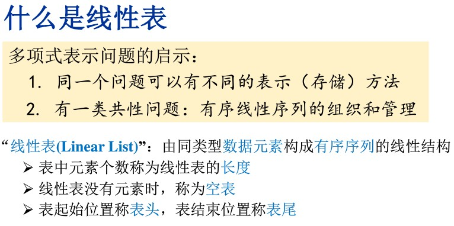
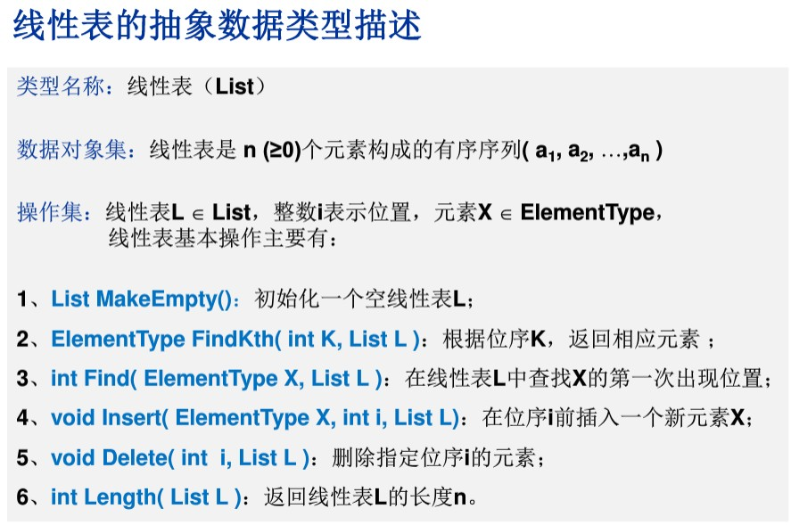
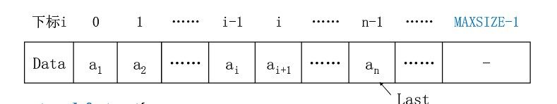
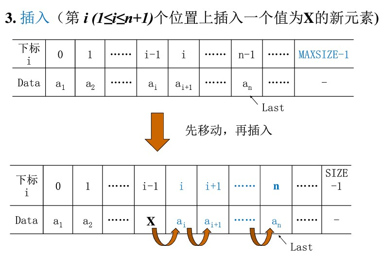

表示的三种方式：
顺序存储结构直接表示：C语言中的数组
顺序存储结构表示
链式存储结构表示
线性表的顺序存储结构如下：

C语音实现：
/*
* main.c
* 线性表的顺序存储实现
* Created on: 2017年1月19日
* Author: wangke
*/
#include <stdio.h>
#include <stdlib.h>
#define MAXSIZE 10
/**
* 线性表的顺序存储实现
* 利用数组的连续存储空间顺序存放线性表的各个元素
*/
typedef struct{
int Data[MAXSIZE];
int Last;
} List;
List *L;
//初始化
List *MakeEmpty( )
{
List *PtrL;
PtrL = (List *)malloc( sizeof(List) );
PtrL->Last = -1;
return PtrL;
}
//查找 平均时间性能为O(n)
int Find( int X, List *PtrL )
{
int i = 0;
while( i <= PtrL->Last && PtrL->Data[i]!= X )
i++;
if (i > PtrL->Last) return -1; /* 如果没找到，返回-1 */
else return i; /* 找到后返回的是存储位置 */
}
//插入 平均移动次数n/2 平均时间性能为O(n)
void Insert( int X, int i, List *PtrL )
{
int j;
if ( PtrL->Last == MAXSIZE-1 ){ /* 表空间已满，不能插入*/
printf("表满");
return;
}
if ( i < 1 || i > PtrL->Last+2) { /*检查插入位置的合法性*/
printf("位置不合法");
return;
}
for ( j = PtrL->Last; j >= i-1; j-- )
PtrL->Data[j+1] = PtrL->Data[j]; /*将 ai～ an倒序向后移动*/
PtrL->Data[i-1] = X; /*新元素插入*/
PtrL->Last++; /*Last仍指向最后元素*/
return;
}
//删除 平均移动次数(n-1)/2 平均时间性能为O(n)
void Delete( int i, List *PtrL )
{
int j;
if( i < 1 || i > PtrL->Last+1 ) { /*检查空表及删除位置的合法性*/
printf ("存在第%d个元素", i );
return ;
}
for ( j = i; j <= PtrL->Last; j++ )
PtrL->Data[j-1] = PtrL->Data[j]; /*将 ai+1～ an顺序向前移动*/
PtrL->Last--; /*Last仍指向最后元素*/
return;
}
void show(List *PtrL)
{
for(int i=0;i<PtrL->Last+1;i++ )
{
printf("index %d:data %d\n",i+1,PtrL->Data[i]);
}
printf("\n");
}
int main(int argc, char *argv[])
{
L = MakeEmpty();
Insert(1,1,L);
Insert(2,2,L);
Insert(3,3,L);
Insert(4,4,L);
show(L);
int index = Find(2,L);
printf("find 2 index:%d\n\n",index);
Delete(1,L);
show(L);
return 0;
}
输出
index 1:data 1
index 2:data 2
index 3:data 3
index 4:data 4
find 2 index:1
index 1:data 2
index 2:data 3
index 3:data 4其中插入操作的图解：
